ICC 2026 was my second time joining the competition, but the feeling this year was completely different. At first, I wanted to write this experience day by day haha. In the end, I think it is better to go directly into the feeling that stayed with me the most.
Joining Team Asia
Last year, I joined as part of ASEAN. This year, when I received the notice, I found out that I would be joining Team Asia, the runner-up team from last year.
I was happy because I knew I would be surrounded by many very strong players. At the same time, one question kept appearing in my mind. If everyone around me is already so strong, what can I actually bring to the team?
As usual, the ICC format had 16 active players and 1 substitute. This year also had a human-resistance phase and an AI phase. During the human-resistance phase, we were limited to a smaller model setup, and later the team had a shared AI budget for attack-defense and jeopardy. That made every decision feel more important, because time, attention, and resources were all limited.
Trying to be useful before the game
Before the competition started, I understood that I could be substituted at any time. I also knew that I had been long time no manually solving challenges without AI as much as before. Because of that, I tried to contribute as early as possible through preparation.
I helped with the attack-defense setup, including things like s4dfarm, tulip, a Discord bot, and scripts for dumping challenge files into GitHub. I tried to make these ready before demo day with our captain "flame", and I was very glad that my Discord bot and dumper were eventually adopted by the team.
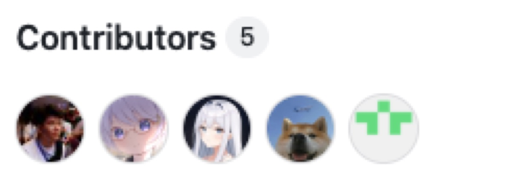
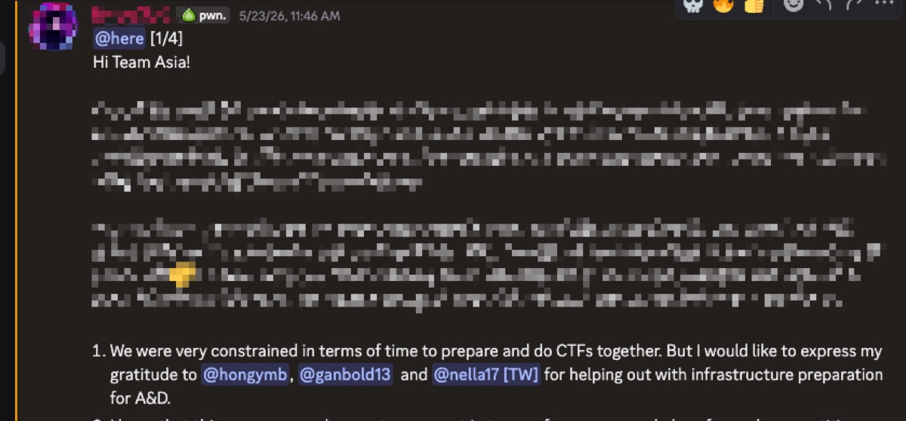
Even if I could not guarantee a solve later, I wanted to make sure I had already helped the team in some way.
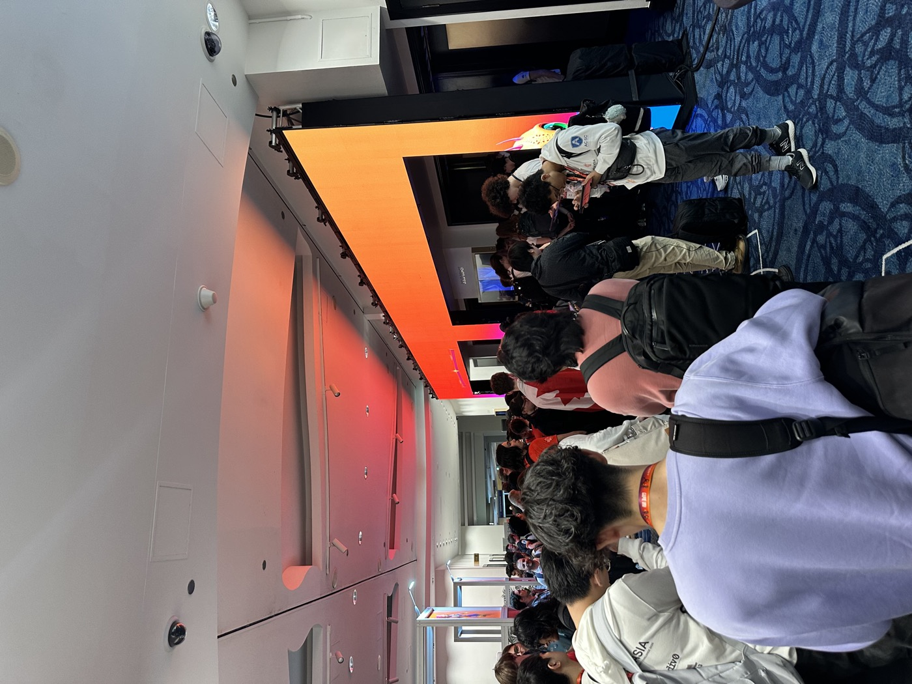
Day one: happy, anxious, and under pressure
First day, I was assigned as a web exploit player. Honestly, I was both happy and anxious.
In the first hour, I focused hard on one challenge. Rayhan and I looked at a reversed binary and suspected there might be SQL injection. I quickly focused on the login and flight pages, trying different SQL payloads and checking whether that direction made sense.
Then Europe got first blood, and it immediately broke our assumption. The issue was not the SQL injection path we were chasing. The login page had an overflow that could overwrite data. After a short discussion with Moyashi, we moved quickly into copying the working payload idea and patching the service.
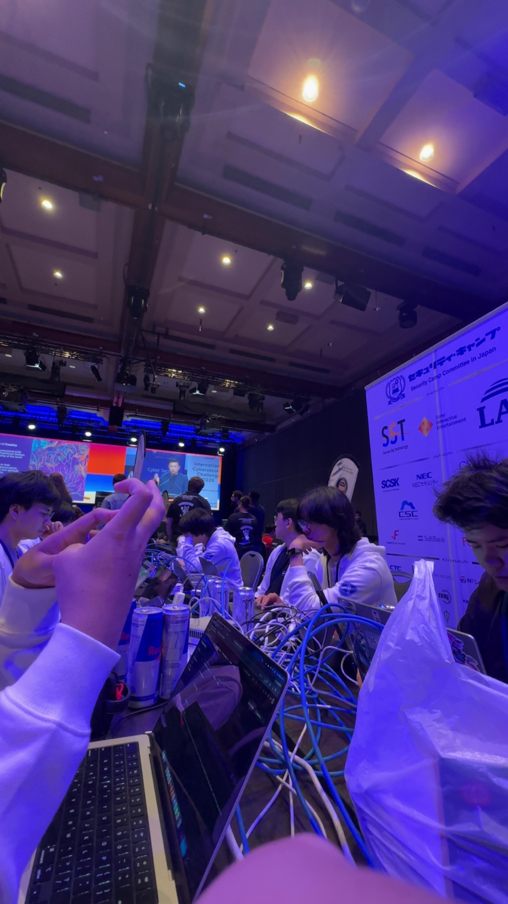
After patching, we still saw that the challenge could be attacked. That meant there was another attack surface. With tulip, we quickly narrowed the direction toward the QR flow. It looked like the QR signature might be forgeable to access a page containing the flag. I was preparing to script the QR flow, but at that moment Satoon solved it.
Again, I felt pressure. I understood the rough direction, but someone else turned it into a solve much faster. On top of that, the QR tooling I wanted to use did not run properly on my Mac, which made me feel even more behind.
At that point, I had two choices. I could switch to another challenge, as the captain asked Rayhan and me to check another zero-solve challenge, or I could keep focusing on the same service and try to work on the next flag.
I thought changing challenges might give me new ideas. But one challenge involved a binary running in a web context, and honestly, I did not know where to go with it. Another was Rust crypto, which was even further away from what I could help with at that moment. So I moved back to the original web challenge and kept staring at tulip.
By the end of the day, Team Asia was ranked fifth. I know fifth place is not terrible, but for a team this strong, it felt bad. Personally, I felt like I had not helped enough. I could only hope that on the second day, in jeopardy, I might contribute in AI, cloud, hardware, or miscellaneous challenges.
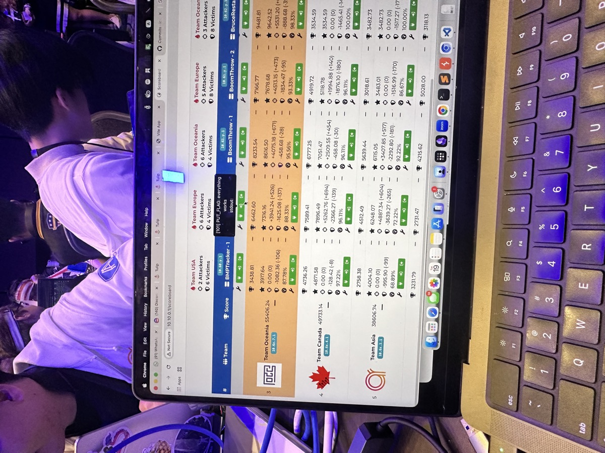
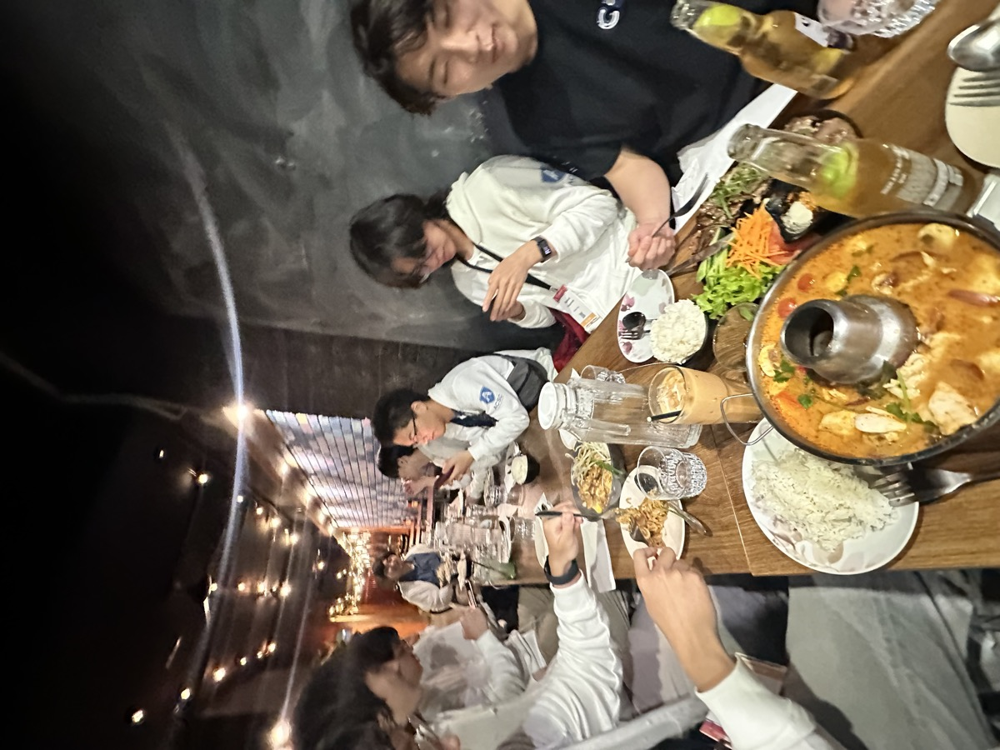
The night before being benched
That night, after we returned to the hotel, our captain went room by room to check in with everyone. When he came to the room Rayhan and I shared, he said something like:
At that moment, I felt like it was over for me. Unlike last year, the substitute was decided far in advance 1 or 2 days. This year, it could simply happen through a Discord notification in the morning, and suddenly you were no longer in the active group. So we need to be ready for anytime.
Day two: the bench
The next morning, .....
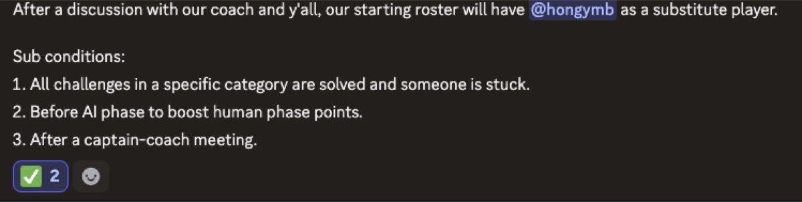
I tried to think positively. The active players were better for that moment. This was how Team Asia could pull the score back.
When I arrived at the venue, I quietly walked to the substitute seat. I watched my teammates set up, but there was nothing I could do. I could only cheer for them in my heart.
I kept watching the scoreboard, checking what challenges were still unsolved, and talking with people around me. Fortunately, Team Asia stayed around the top three. One funny thing is that this was the first time in a CTF where I could slowly enjoy lunch, bite by bite, instead of eating in a rush while debugging something.
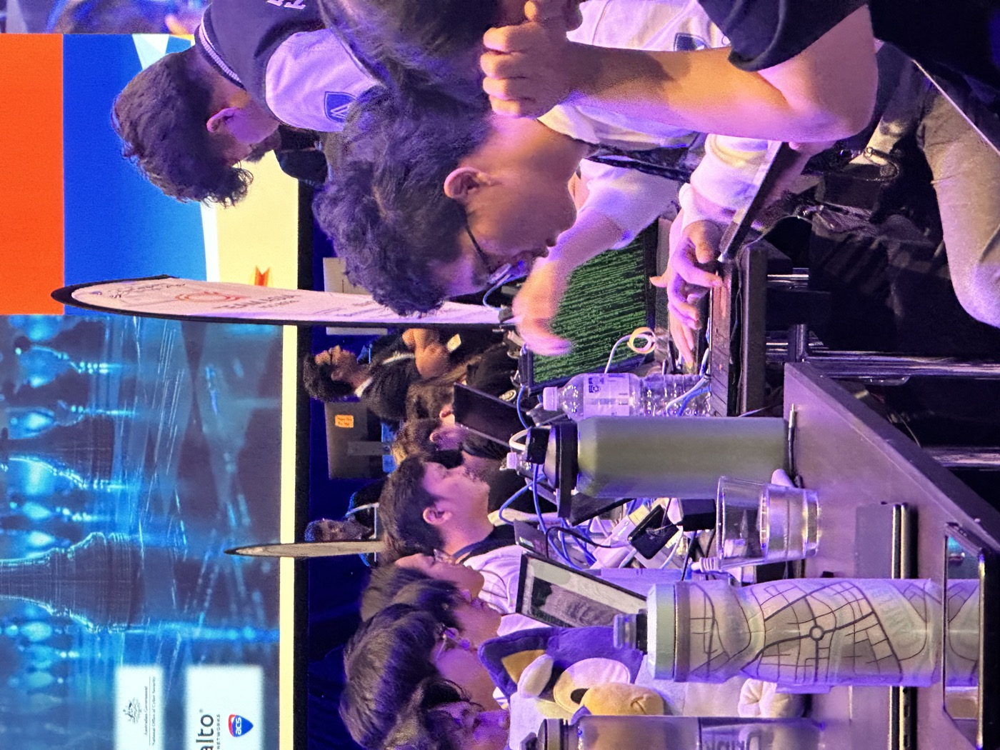
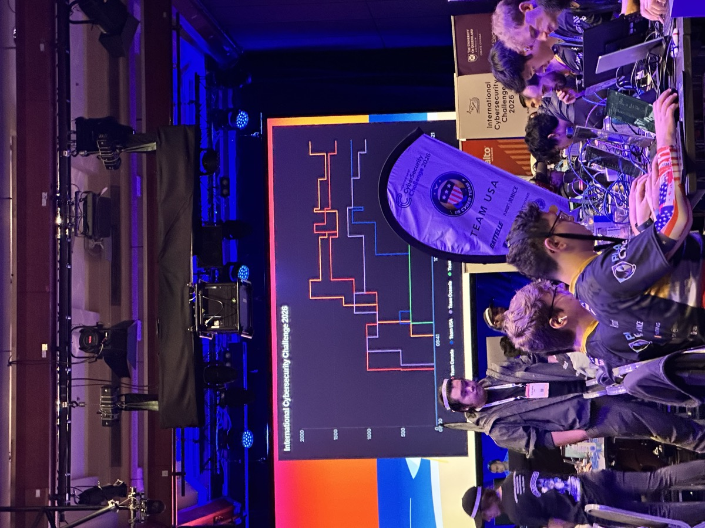
Suddenly called back in
After lunch, I still did not know whether I would be substituted back in. I watched the scoreboard until I fell asleep.
Around 3:20 PM, the moment I opened my eyes, I heard someone ask, "Are you the substitute?" Suddenly, I was called back into the active area. Team Asia needed help in miscellaneous, and other categories had also been stuck for a while.
I rushed back to the table, opened Discord, and saw dense channel messages everywhere. First, I had to understand the current challenge progress. I only had around two and a half hours. I could not solve like usual from the beginning. I had to quickly choose where I could be useful.
I was thinking... If I could not solve anything, then I would have wasted the substitute opportunity.
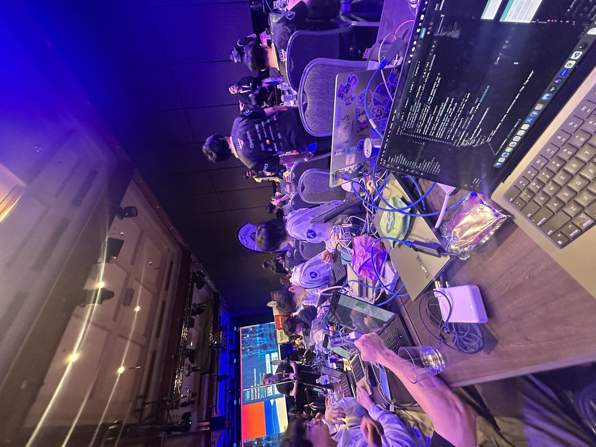
The A2A / MCP challenge
At first, I panicked because I did not see a familiar cloud challenge. Then I noticed an A2A-style challenge. I had seen this kind of thing briefly before, so I started immediately.
The Discord channel had only a few messages. It was an A2A / MCP challenge with login credentials and a web console. At the beginning, I had no idea what it wanted. Then, from a small amount of command fuzzing, I found an agent.md file. That gave me the direction.
The idea was to obtain a nonce and then resend the request through JSON-RPC. I followed the format from a GitHub script and tried several variations. After many type errors and failed attempts, I finally got the flag around 4:40 PM.
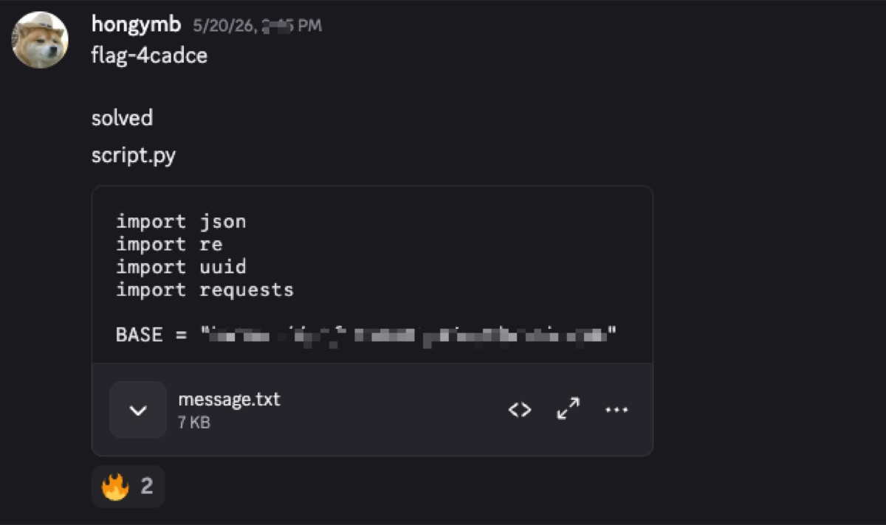
After taking one breath, I immediately moved to the next challenge. I had only about 1 hour and 10 minutes left.
I had three choices: reverse engineering, which I am familiar with but was not my team's main direction; hardware, which I also like but might take too long to follow up; or OSINT, which I am not strong at but already had three solves from other teams.
I originally wanted to do reverse engineering for a final push. But I noticed our team was consuming AI tokens quickly. If I continued using them, I might waste tokens and time that teammates had already spent. I also looked at hardware, but our captain had already spent a lot of effort there, and I did not want to interrupt or waste his time.
So I chose OSINT because it did not need AI. I am still not sure whether that was the correct decision. In the end, I did not find the username before the competition ended.
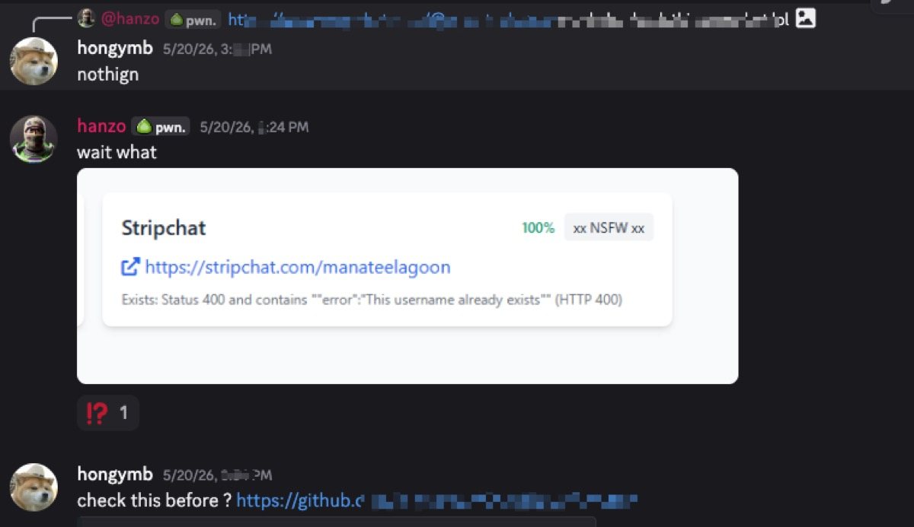
After the game
That was the whole emotional journey of the two competition days. There were jokes, pressure, choices, fast decisions, disappointment, one small comeback, and a lot of learning. It was a very unforgettable competition.
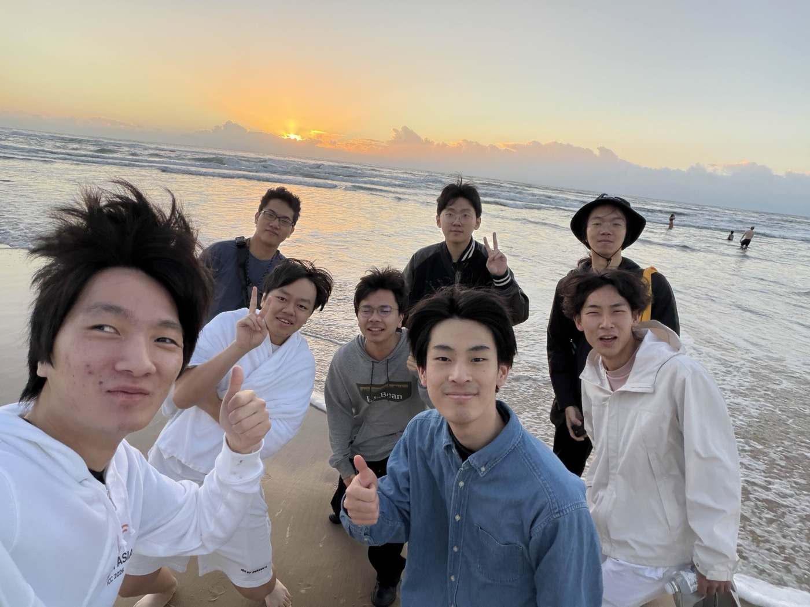
After that, we went to AusCERT, visited the conference, went to see wildlife, and had dinner together near the beach. These moments made the trip feel like more than only a competition.
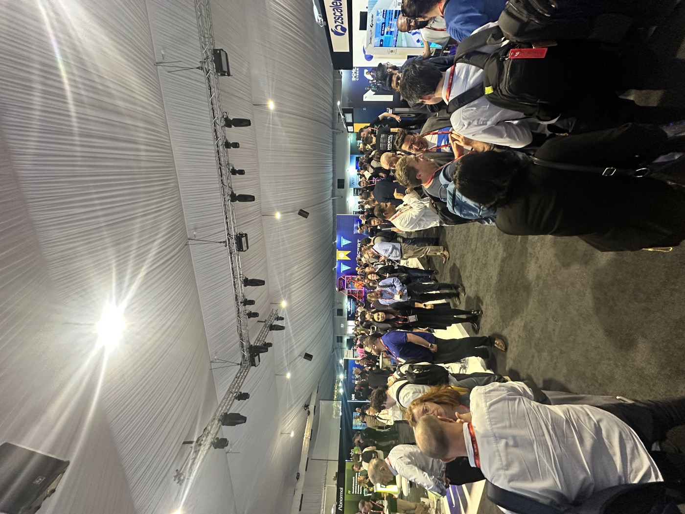
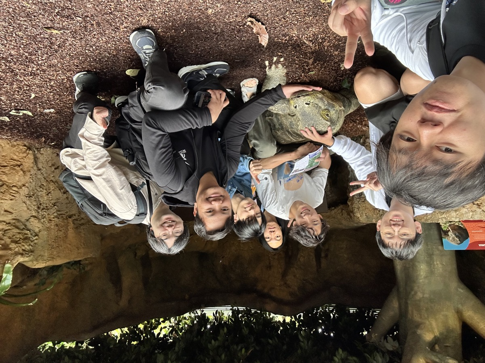
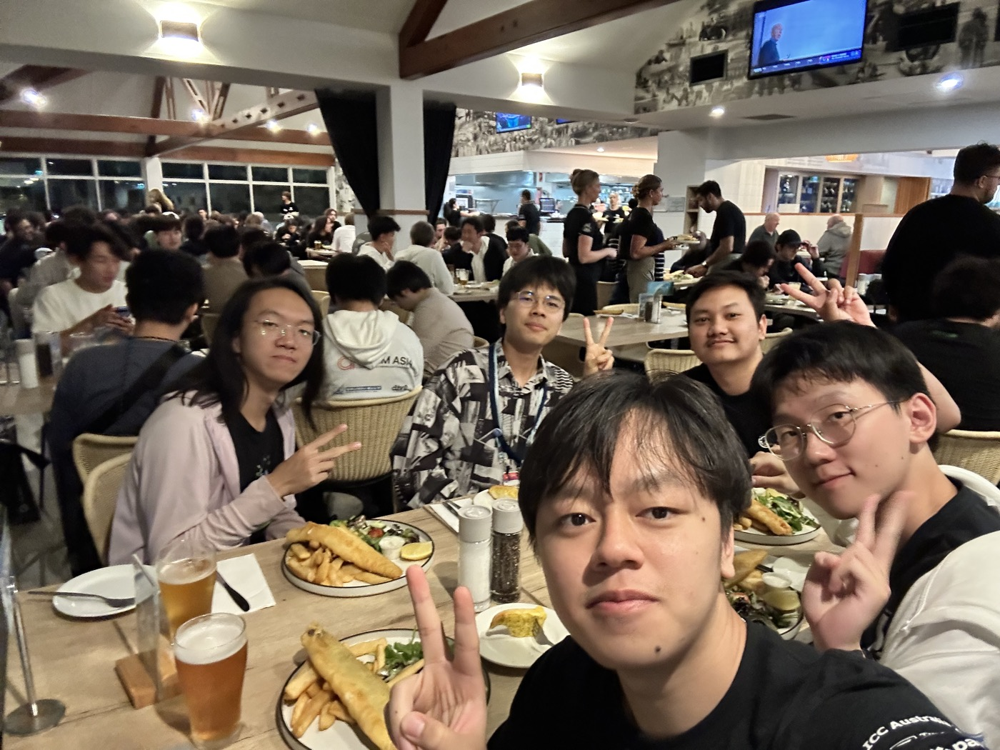
Thank you
I am very happy that I got to meet so many talented people from around the world. Shoutout to the fun and very strong web players Moyashi and Satoon; Claustra, Hikkun, and Zatsu; crypto genius Yu; binary runner iwanconf; the lovely Taiwan sunrise group Allen and Yunshieun; the Korean group wlswotmd, KS, and Oni; hardworking Rayhan from Indonesia; and the Mongolia group Flame and Gambo.
Most importantly, thank you to Sherpa for the trust and support. This opportunity meant a lot to me and more aware of what I need to improve.
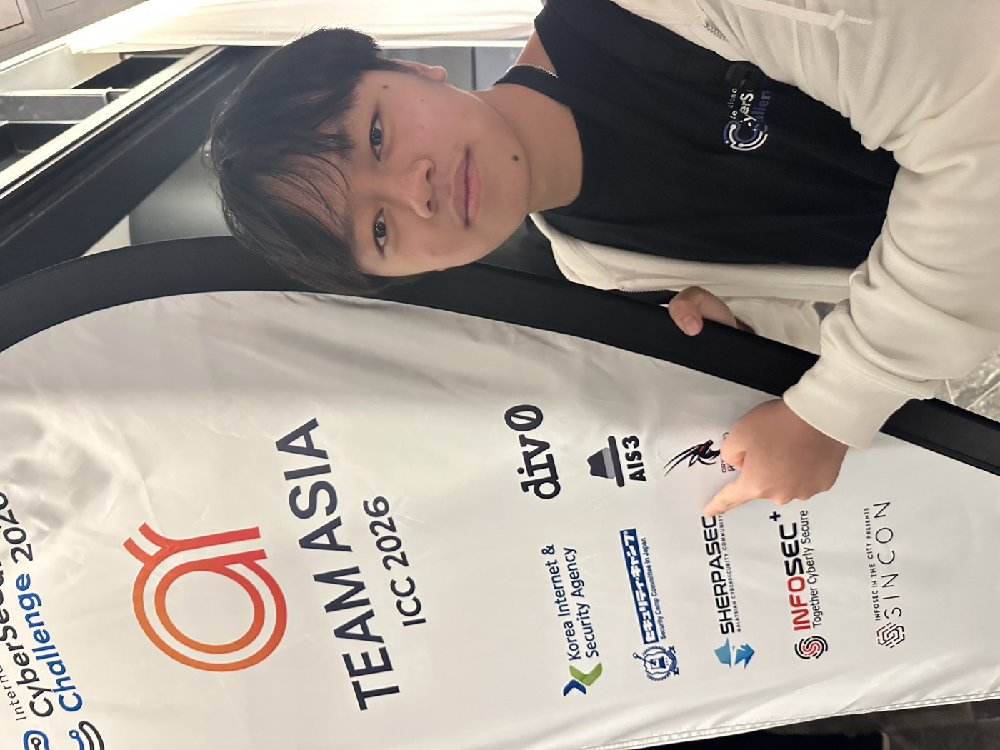
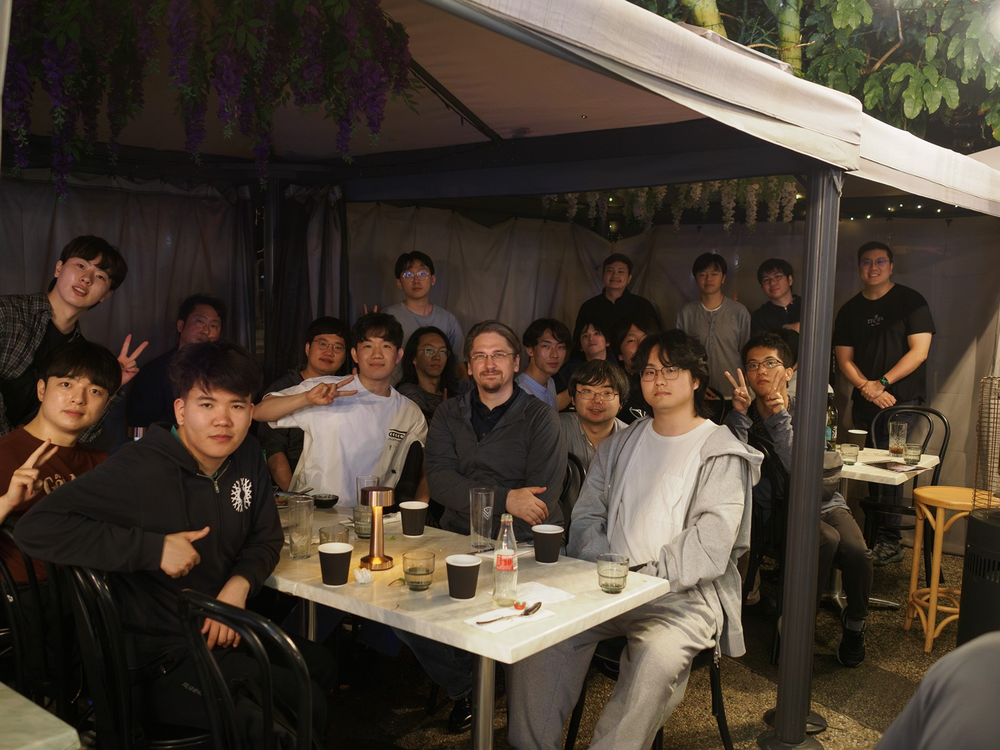
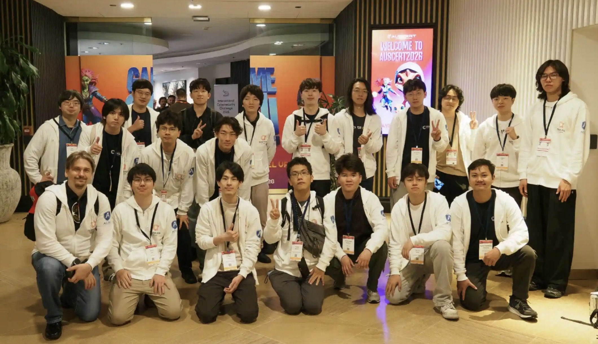